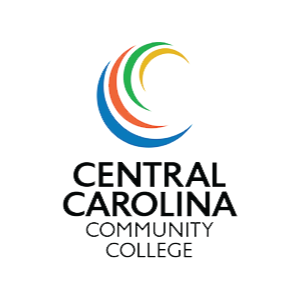
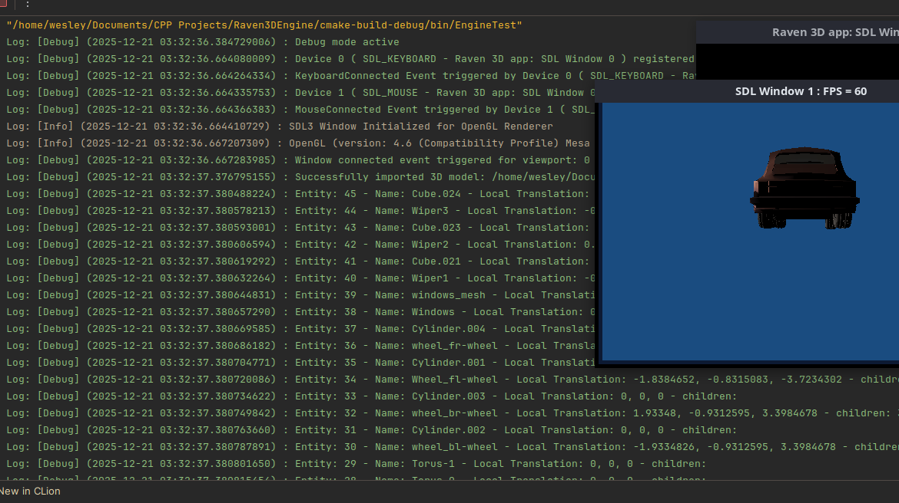
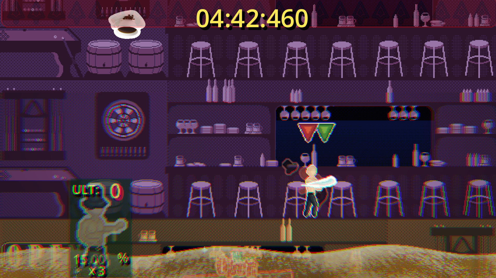
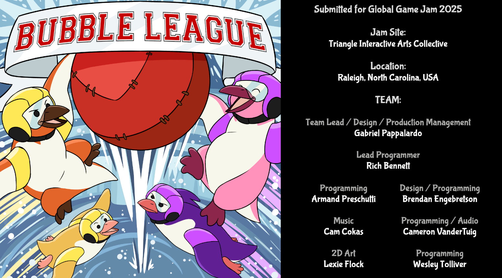
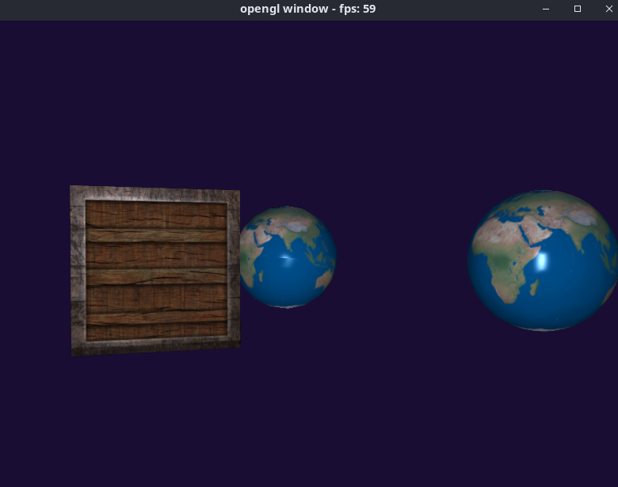

About me
Hi, I'm James Tolliver!
I'm a systems programmer with more than 4 years of professional experience in developing and maintaining large scale legacy codebases. I have simultaneously worked across multiple projects and tech-stacks to support various research efforts at RTI International. I spend much of my free time working on low level cross-platform app development, often employing C++ and OpenGL. When I have time, I try to join game jams with my friends. Some of my favorite projects have been game jams - the time crunch and creative constraints push us to our limits and brings out the best in the whole team.

When I'm not writing software, I love to play RPGs with my friends, play a lot of different video games (and try to figure out how they work), travel (see picture of my partner and I in Montreal above), and most importantly spend quality time with my loving fiancé. Work-life balance is an important part of a healthy life, and I believe that my time with my friends and family makes me all the more dedicated to my work.
Career
RTI International
July 2022 → Present
Full stack development across multiple large scale code-bases and databases. Developed and provided support for web based systems critical to various surveys conducted by RTI.
Education
Western Carolina University
Graduation: Spring 2022

Central Carolina Community College
Graduation: Spring 2019
Projects

Personal Project
Aug 2025 → Present
githubA work in progress 3D game engine built using C++ and OpenGL. The engine currently has systems for Logging, event handling, rendering, windowing, and viewports.

Godot Wild Jam #92 Collaboration
April 2026
itch.ioA 2D scrolling platform brawler built using the Godot game engine for Godot Wild Jam 92. I worked primarily on the code for the character controller, animations, and core mechanics.

Global Game Jam 2025 Collaboration
Feb 2025
itch.ioA 2D sports game best described as Rocket League with penguins. Built in the Unity game engine for Global Game Jam 2025. I worked primarily on the code for the physics and character control.

Personal Project
2024 → 2025
githubA simple 3D rendering engine that documents my early progress learning the OpenGL 4.6 API. It includes 3D rendering of primitives such as cubes and spheres with textures, simple phong lighting, programmatic UV- and Ico-sphere vertex and texture coordinate generation, and a look-around camera.
Resume & Links